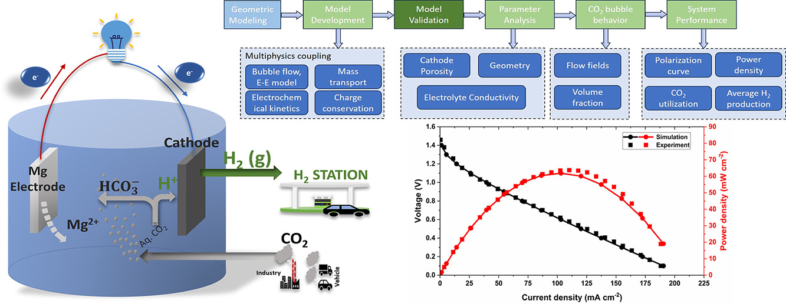

After industrialization, atmospheric carbon dioxide (CO2) increased to 420 ppm, leading to critical environmental issues. Despite advances in carbon capture, utilization, and storage (CCUS) technologies, their economic feasibility and slow CO2 conversion rates hinder their effectiveness. Recently, metal-CO2 electrochemical systems that utilize the acidity from the spontaneous CO2 dissolution in aqueous solution have gained significant attention due to their potential for hydrogen and electrical energy generation. However, there is a lack of detailed transient analysis and mathematical models of these systems. A three-dimensional transient model is developed of a membrane-free Mg-CO2 primary battery for CO2 utilization, power generation, and hydrogen production by integrating Euler–Euler bubble flow, dilute solution theory, and electrochemical kinetics, and validated against existing literature data. It provides insight into real-time species concentration distribution, current and potential distribution, phase fractions, current density, volume-averaged species concentration, and electrochemical performance. Parametric analysis reveals that increasing electrolyte conductivity from 0.20 to 0.30 S m−1, reducing cathode porosity from 0.50 to 0.40, and shortening the anode–cathode gap from 3.5 cm to 2.5 cm significantly enhances power density by 37.64%, 2.46%, and 10.2% and hydrogen production over 24 h by 17.4%, 9.75%, and 31.3%, respectively. This work offers valuable insights for improving the performance of the membrane-free Mg-CO2 system, contributing to a more sustainable and environmentally friendly energy solution.
Keywords: Mg-CO₂ battery; Multiphysics modeling; CO₂ utilization; Hydrogen production; Euler–Euler bubble flow
Schematic of the membrane-free Mg-CO₂ primary battery framework showing the coupling of Euler–Euler bubble flow, dilute solution theory, and electrochemical kinetics:

If you find this research or the modeling framework useful in your work, please cite it using the format below:
@article{singh2025mathematical,
title={Mathematical modeling and simulation of Mg-CO2 primary battery for hydrogen generation and CO2 utilization},
author={Singh, R. K. and Ghosh, P. C. and Ramadesigan, V.},
journal={Electrochimica Acta},
volume={531},
pages={146333},
year={2025},
publisher={Elsevier},
doi={10.1016/j.electacta.2025.146333}
}